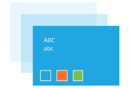

Research & Design Systems
Standardizing the UX Practice
PROJECT OVERVIEW
Standardizing the UX practice to improve efficiency, impact, and buy-in
- My Role & Responsibilities: UX Lead; led the establishment and promotion of design and research systems
- Project Timeline: 6 months

BACKGROUND
Before implementing a streamlined UX practice, our design and research efforts lacked a central point of reference, with components and templates scattered across various projects that were often outdated or inaccessible. Consequently, the design and research process became burdensome and inefficient.
To address these challenges, we needed to establish processes and guidelines that would significantly enhance the team’s efficiency, increase impact, improve stakeholder buy-in and involvement.
GOALS
Develop research and design processes, guidelines, and systems to standardize the UX practice
APPROACH
Optimizing both the design and research functions was a multi-phased process regularly informed by stakeholder feedback, internal learnings, and industry best practices.
Design Function
For the design function, I hired a branding designer who reviewed and updated (as needed) our colors and UI elements to ensure everything was ADA compliant. They also developed custom iconography for us to elevate our visual branding efforts. Internally, we focused on building out our components and overall design strategy, w the following:
Research Function
On the research front, we focused on templatizing our narrative-based deliverables that could be easily utilized (and referenced) by anyone within the organization. This included our research plans, reports, presentation decks, personas, and other UX deliverables. We also started the process of automating our user feedback loops and prioritizing regular insight readouts with stakeholders.
Before implementing a streamlined UX practice, our design and research efforts lacked a central point of reference, with components and templates scattered across various projects that were often outdated or inaccessible. Consequently, the design and research process became burdensome and inefficient.
To address these challenges, we needed to establish processes and guidelines that would significantly enhance the team’s efficiency, increase impact, improve stakeholder buy-in and involvement.
GOALS
Develop research and design processes, guidelines, and systems to standardize the UX practice
APPROACH
Optimizing both the design and research functions was a multi-phased process regularly informed by stakeholder feedback, internal learnings, and industry best practices.
Design Function
For the design function, I hired a branding designer who reviewed and updated (as needed) our colors and UI elements to ensure everything was ADA compliant. They also developed custom iconography for us to elevate our visual branding efforts. Internally, we focused on building out our components and overall design strategy, w the following:
- Established design principles for the team to follow
- Standardized our typography and breakpoints
- Aligned to an 8-pt grid system
- Built out components in Figma
- Developed a style guide that we shared across the organization
Research Function
On the research front, we focused on templatizing our narrative-based deliverables that could be easily utilized (and referenced) by anyone within the organization. This included our research plans, reports, presentation decks, personas, and other UX deliverables. We also started the process of automating our user feedback loops and prioritizing regular insight readouts with stakeholders.
OUTCOME
Design Function
In H1 2023, we successfully implemented the initial phase of our design system, resulting in significant time savings for both our Designers and Devs throughout the development process. By establishing a unified design system, we are able to streamline our workflows, enhance collaboration, and ensure a cohesive and accessible user experience across our products and services. Below you'll find our new style guide and design principles:

The SmartAsset Style Guide

The Design Principles
Research FunctionIn H1 2023, we successfully implemented the initial phase of our design system, resulting in significant time savings for both our Designers and Devs throughout the development process. By establishing a unified design system, we are able to streamline our workflows, enhance collaboration, and ensure a cohesive and accessible user experience across our products and services. Below you'll find our new style guide and design principles:
Furthermore, we have achieved successful templatization of all research deliverables, resulting in improved efficiency within the research function. Through the standardization of documentation for insights and findings pertaining to our core audience and product usability, we have fostered a shared understanding and facilitated seamless collaboration across teams. This streamlined approach ensures that valuable research outcomes are effectively communicated, enabling informed decision-making and enhancing our overall product development process. In addition, we also started working through automating our feedback loops for both user groups.